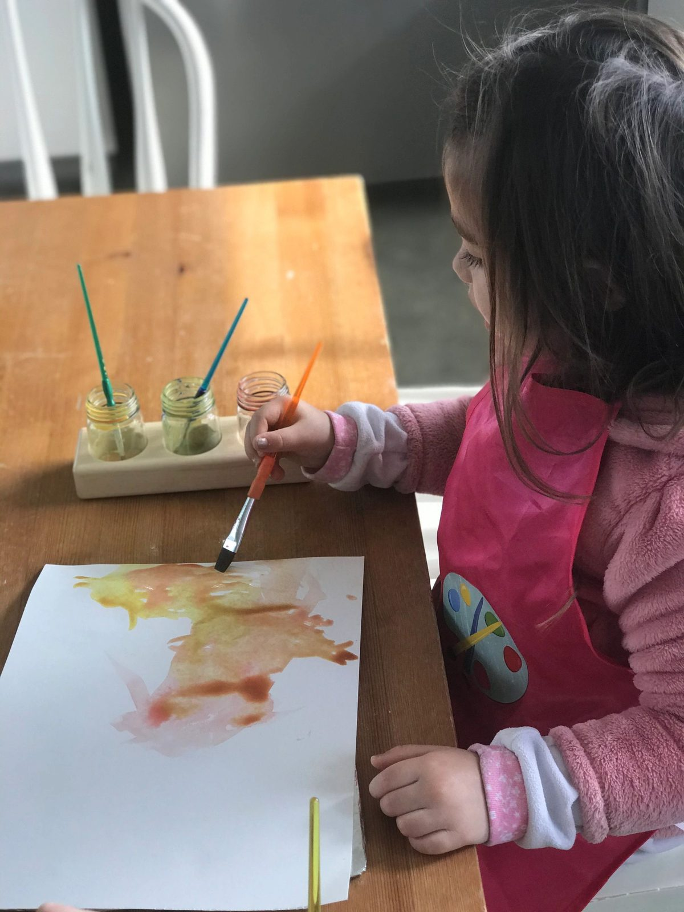
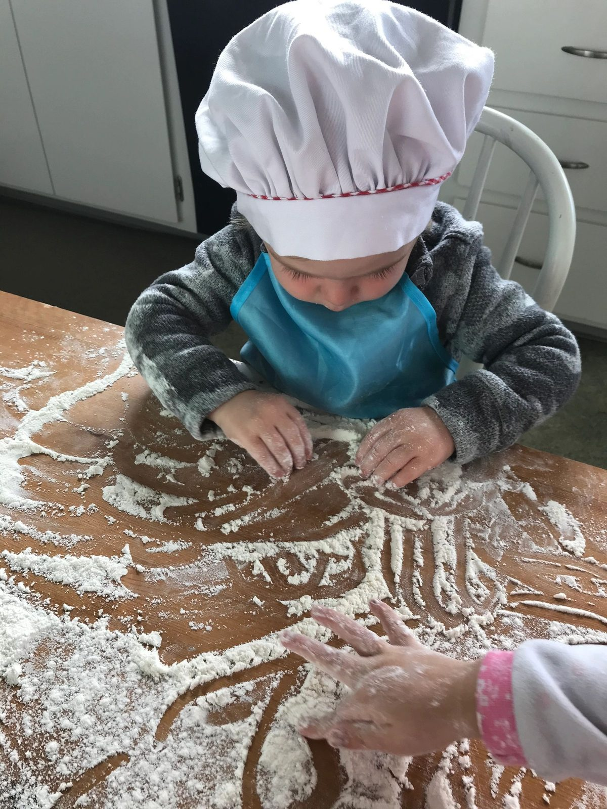

Joyful Discovery
Texture, color, aroma, and beautiful presentation help cultivate a positive and joyful relationship with food.
Rather than following a hurried schedule, we create a calm and nurturing pace where children can explore, play, and learn through meaningful experiences.
Each morning begins with a warm welcome, allowing children time to settle into the day through free play and connection with friends. We gather together to enjoy a wholesome, homemade breakfast before transitioning into our morning circle.
Circle time is filled with songs, movement, finger plays, storytelling, seasonal verses, and books that introduce children to nature, cultural traditions, and the changing seasons.
Children are naturally exposed to English, Spanish, and Portuguese through songs, conversations, stories, and daily interactions, fostering an appreciation for language and diverse cultures.



Plenty of uninterrupted free play allows children to develop imagination, problem-solving skills, and meaningful friendships.
A consistent daily rhythm helps children feel safe, confident, and connected through meaningful work, joyful play, nourishing meals, and time spent in nature.
| Time | Activity |
|---|---|
| 8:00-8:30 AM | Arrival & Welcome |
| 8:30-9:00 AM | Homemade Breakfast |
| 9:00-9:15 AM | Morning Circle Time |
| 9:15-10:00 AM | Free Play, Indoors or Outdoors |
| 10:00-10:15 AM | Activity of the Day: Art, Gardening, Baking, Yoga, Practical Life, or Seasonal Crafts |
| 10:15-10:30 AM | Healthy Snack |
| 10:30-11:45 AM | Outdoor Exploration & Free Play |
| 11:45 AM-12:05 PM | Homemade Lunch at the Community Table |
| 12:05-1:00 PM | Brush Teeth & Transition to Rest |
| 1:00-3:00 PM | Rest & Nap Time, individualized according to each child's needs |
| 3:00 PM | Afternoon Snack |
| 3:00-5:00 PM | Free Play, Art or Sensory Activities, Story Time & Departure |

Our homemade meals are enjoyed together around a community table, where teachers and children share conversations about their day, practice gratitude, and build a strong sense of community.
After lunch, children brush their teeth and transition into a peaceful rest time. We recognize that every child is unique, so nap schedules are thoughtfully adapted to meet each child's individual needs.
Outdoor play is an essential part of every day. Whenever possible, children spend time exploring nature, climbing, digging, gardening, and discovering the world around them. On rainy days, children put on their rain gear and delight in splashing through puddles.
Nutrition
At Sunflower Garden Nursery School, nutrition is viewed as an essential part of nurturing the whole child. We believe that wholesome, nourishing meals support not only healthy physical growth but also emotional well-being, social connection, and a lifelong appreciation for healthy eating.
From the very beginning, food has been offered as an expression of care, love, and culture. Inspired by the warmth and simplicity of traditional Brazilian home cooking, our meals are thoughtfully prepared using fresh, wholesome ingredients that nourish growing bodies and bring children together around the table.
Texture, color, aroma, and beautiful presentation help cultivate a positive and joyful relationship with food.
Children and teachers gather to enjoy homemade meals, practice conversation, learn table manners, and experience the comfort of eating together.
Children participate in washing fruits and vegetables, baking, mixing ingredients, and helping set the table whenever possible.
Through years of caring for young children, we have observed how texture, color, aroma, and beautiful presentation help cultivate a positive and joyful relationship with food. We encourage children to explore new flavors at their own pace while respecting each child's individual appetite and preferences.
Mealtimes are an important part of our daily rhythm. These peaceful moments encourage mindful eating, healthy digestion, and a strong sense of belonging.
At Sunflower Garden Nursery School, we believe that nourishing the body is also a way of nourishing the heart, creating healthy habits and joyful memories that children carry with them for years to come.